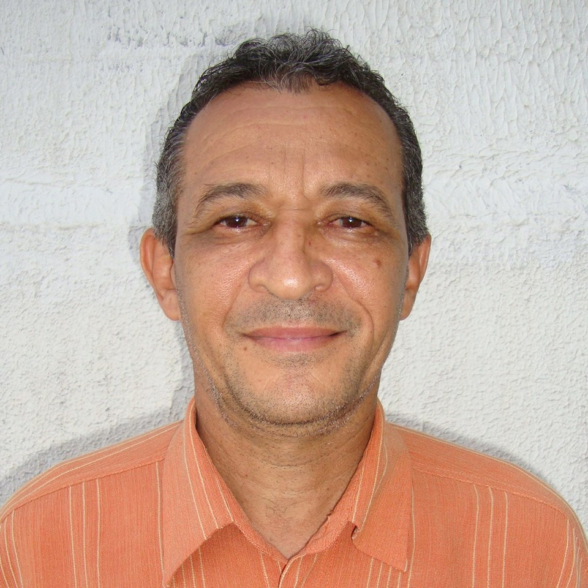

Raimundo, Professor Matematica é uma das matérias que a nossa sala mais tem, por conta disso, enjoamos um pouco, com ainda continua sendo a das aulas legais, pois mesmo escrevendo que nem loucos, podemos conversar e conseguimos aprender ao mesmo tempo. O professor Raimundo é um dos mais legais e simples que tem na escola, ele é muito gente boa e é meio enrolado nas explicações, mas ainda sim entendemos. Matémática é uma das matérias mias importantes que existe, e ainda tem muita relação com o curos.